IndieLisboa2026.png)
IndieLisboa is an international film festival that takes place in Lisbon between late April and early May. As in recent years, for each edition of the Festival, an artist or designer is invited to create the visual identity for that year. The communications and design team is then responsible for implementing the visual identity, adapting it to the various formats and communication materials required by the Festival. In this case, that includes the magazine featuring the full festival program, the IndieJúnior brochure—which is one of the Festival’s main sections—postcards, stickers, billboards, certificates of participation in the Festival activities, envelopes for ticket vouchers and digital materials such as covers for sponsors’ websites, digital guides and booklets, and ticket sales platforms.
IndieLisboa2026.png)
In 2026, I had the pleasure and opportunity to join the great Sílvia Matias—who has been in charge of the Festival’s communication materials over the past few years—and embrace this challenge with her between March and June.
Although I spent the first few weeks working alongside Sílvia, it eventually became a more individual process, working only in collaboration with my colleague from the communications department (Mafalda Miranda Jacinto), as I ended up taking charge of some of the communications materials.
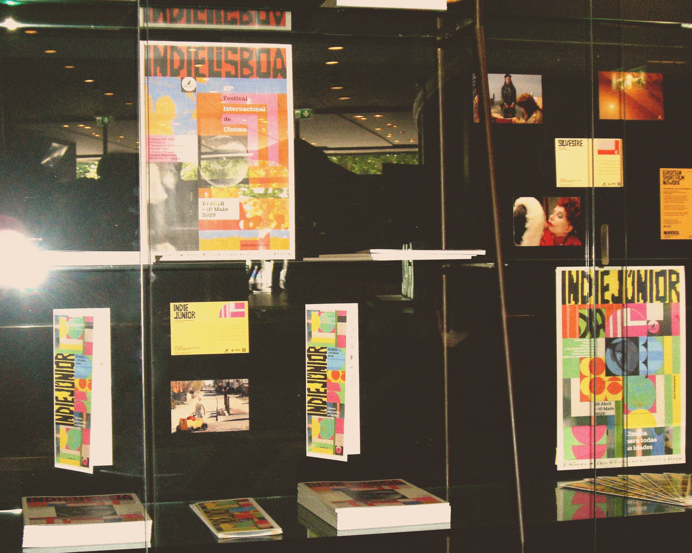
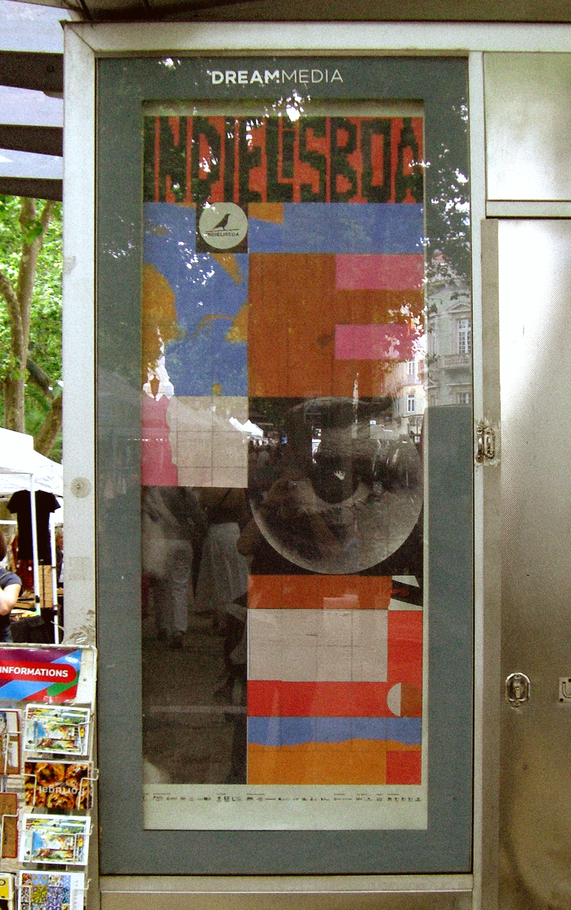
Some scans from the magazine that has the full festival schedule.
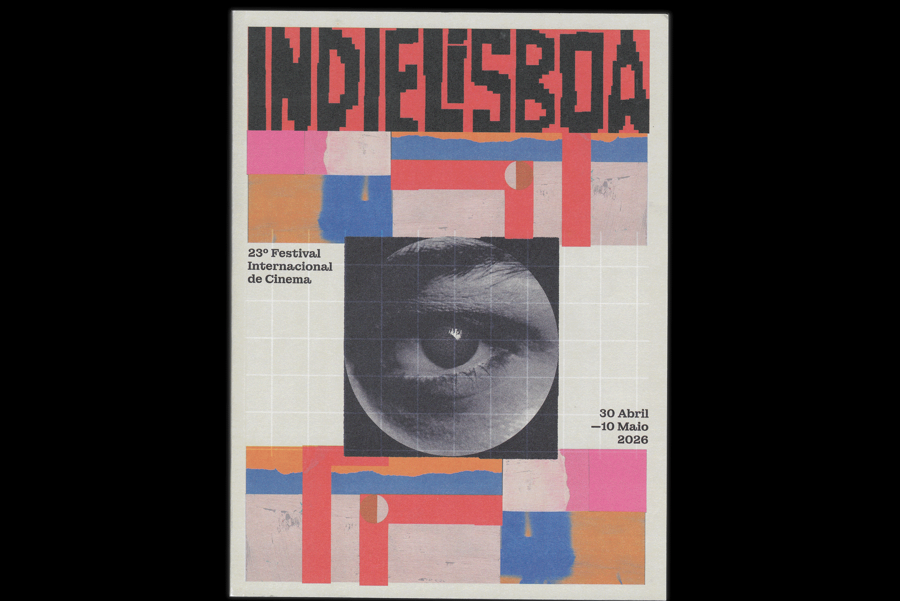
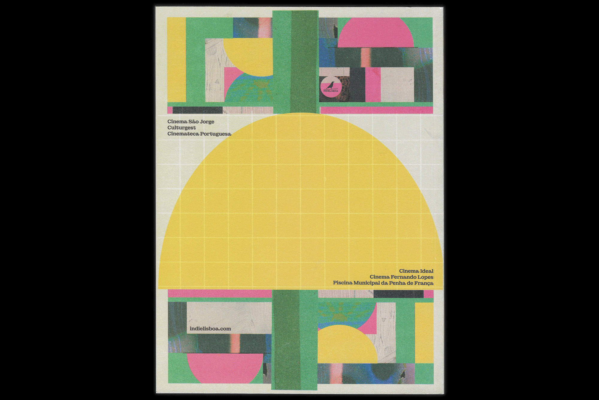
A few more scans, this time from the IndieJúnior section brochure.
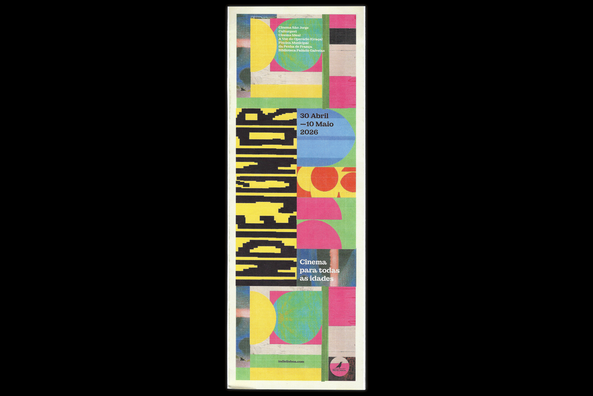
Some postcards, stickers and envelopes for the ticket vouchers.
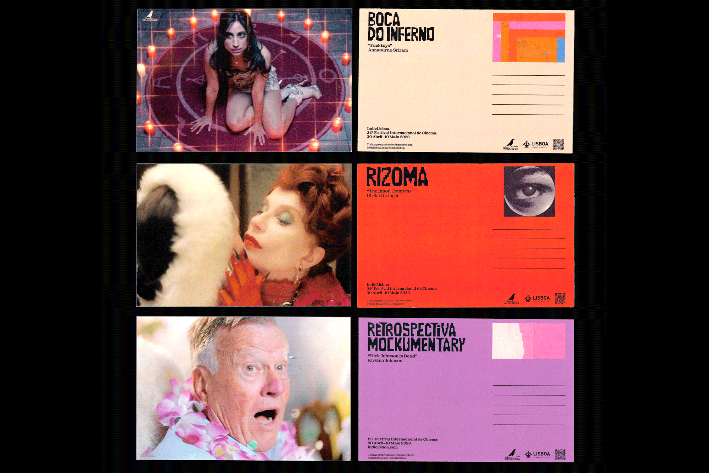
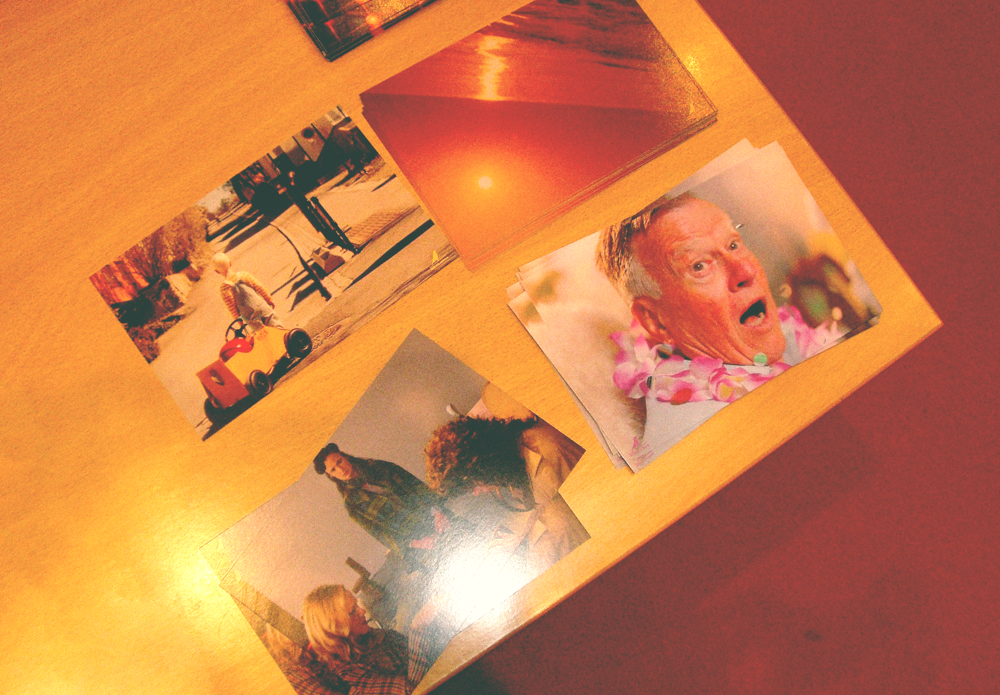
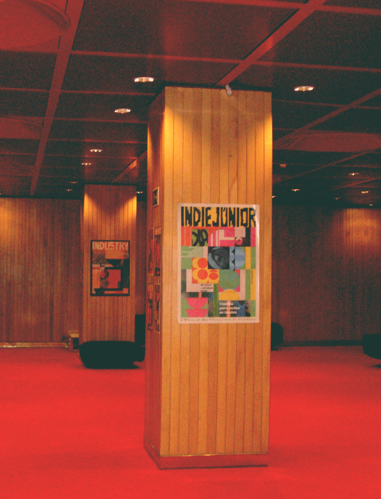
And some pages from the digital booklet made for the Industry section and the and the certificate of participation for the IndieJúnior section activities.
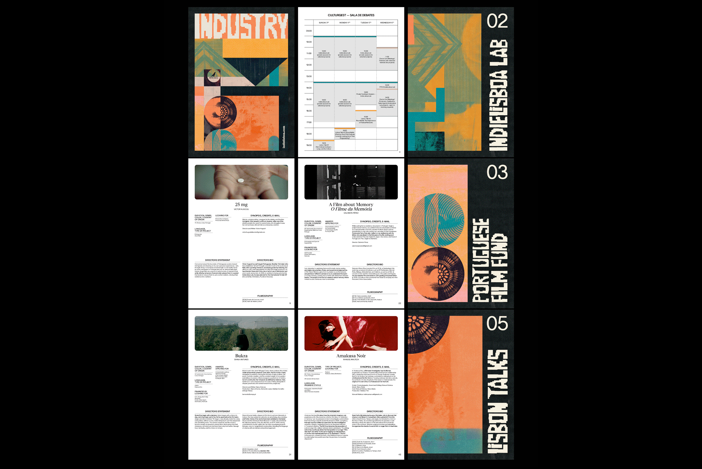
The program schedule at the entrance of one of the venues where IndieLisboa was taking place.
IndieLisboa2026.png)
Finally, just like in previous editions, the last communication piece to be produced was a series of screens promoting the Call for Entries for the next edition of IndieLisboa, to be held in 2027.
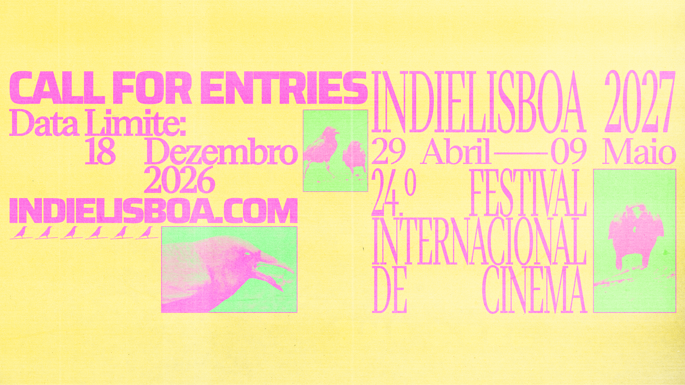
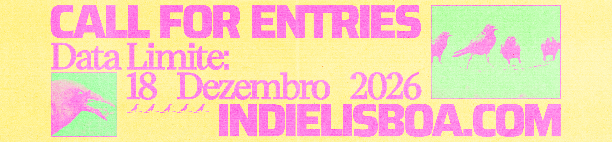
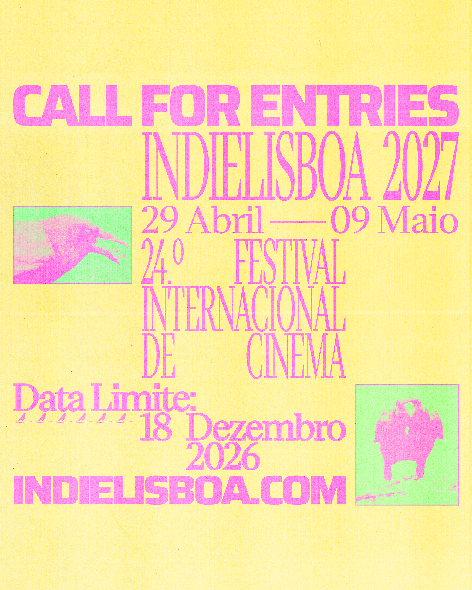
IndieLisboa2026.png)